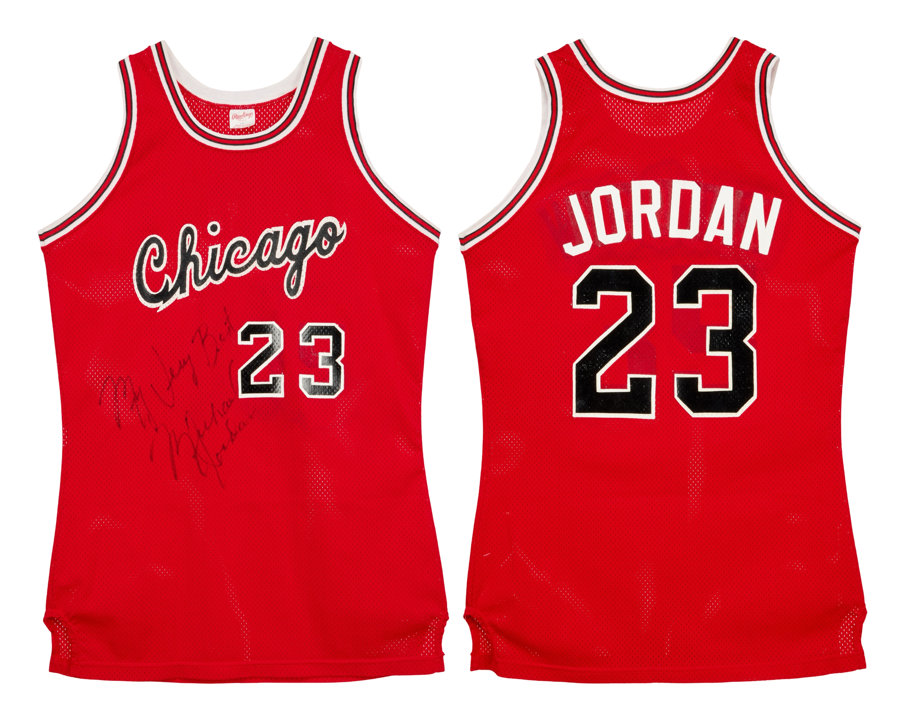
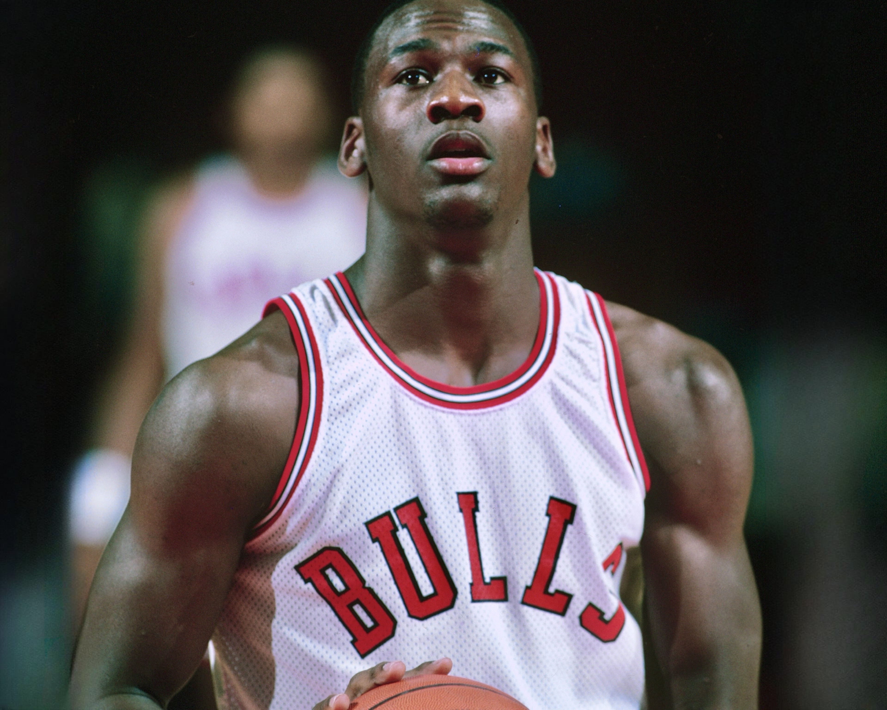
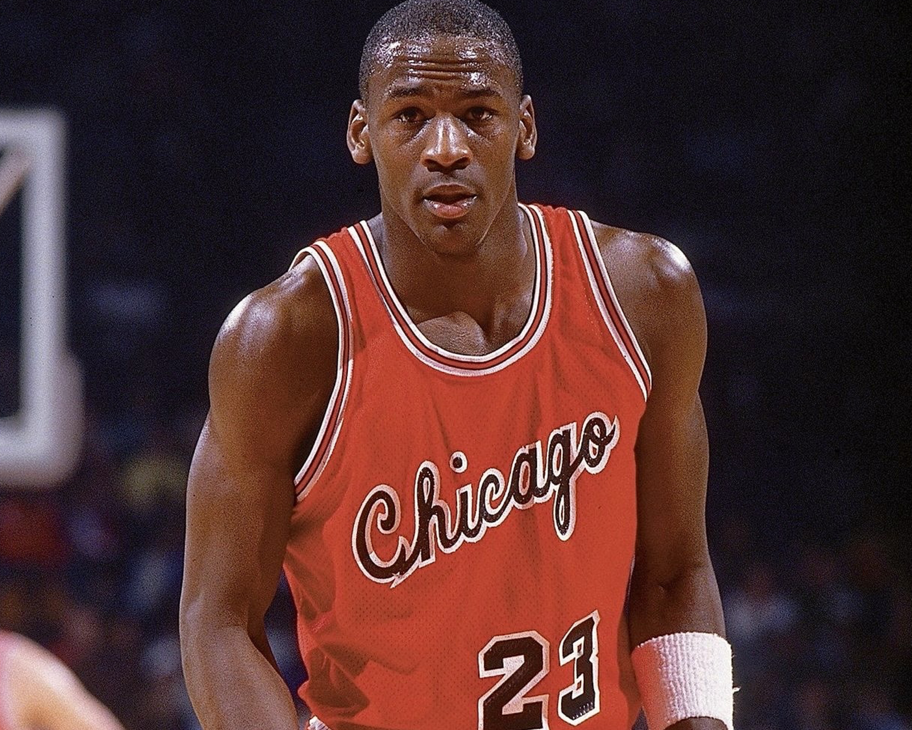

1984–85
Population Summary
| Style | Confirmed | Public | Audit |
|---|---|---|---|
| Promo (Home) | 1 | 1 | √ |
| Preseason (Away) | 1 | 1 | √ |
| Home | 1 | 0 | ⏳ |
| Away | 1 | 0 | √ |
The Michael Jordan Archive population study is an ongoing research initiative. Population conclusions reflect best-available documentation and comparative review.
Preseason (Away / Red)

Publicly documented example (preseason).
Public Sale Details
- Auction House: Sotheby’s
- Sale Date: March 26, 2025
- Lot #: Lot 1
- Sale Price: $4,215,000
- Photo-Matched: Yes
- Games Photo-Matched: 2
- Photo-Matched By: MeiGray & SIA
Research Notes & Provenance
- Issued by the Chicago Bulls during the 1984–85 preseason.
- Transferred to the Washington Bullets Auction — May 18, 1985.
- Acquired by a private collector following the 1985 event.
- Offered at the Naismith Memorial Basketball Hall of Fame Auction — September 12, 2009.
- Subsequently acquired by a private collector.
- Publicly sold via Sotheby’s — March 26, 2025.
Regular Season Home (White)

Michael Jordan - 1984/85
Research Notes
This entry will be updated as the full-season visual continuity review and public documentation review are completed.
Regular Season Away (Red)

Michael Jordan - 1984/85
Research Notes
This entry will be updated as the full-season visual continuity review and public documentation review are completed.
Methodology & Scope
Audit status: In Progress
Confidence level: Preliminary
Population conclusions reflect best-available documentation and ongoing multi-source visual review. This entry will be updated as additional verified evidence emerges.
Some supporting documentation may not be publicly disclosed. Where possible, public auction records and primary-source imagery references are provided for transparency.